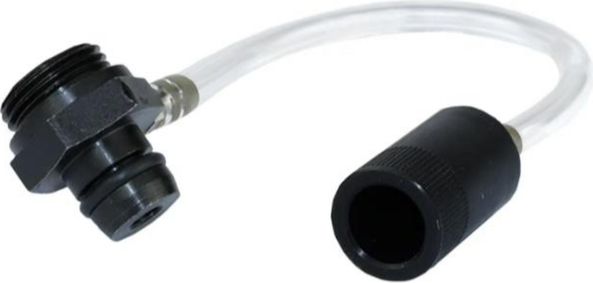
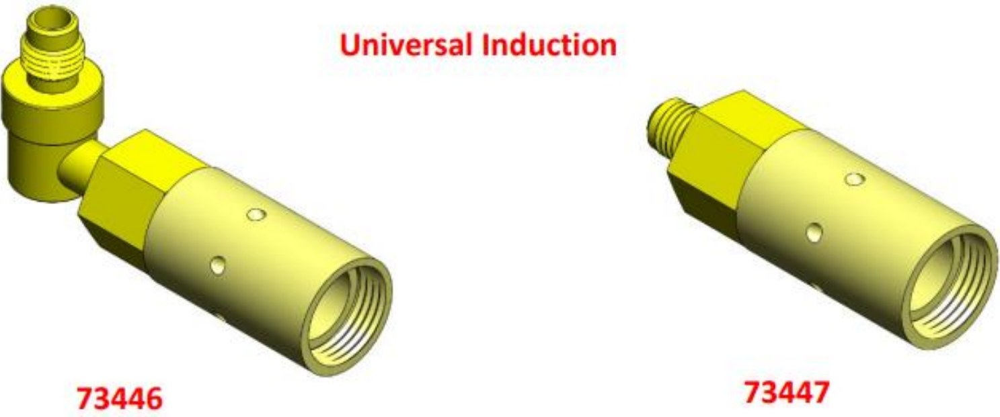

Doc no. MOC-TSB-25-01 // Vol. 25 No. 01 // Nov 5, 2025 // Fuel
BMW Induction Service Adapter
New73491
A new induction service adapter for BMW vehicles.
What's new
It connects through the 73446 adapter for a 90-degree connection, or the 73447 adapter for a straight connection. The MAP sensor cup on the adapter lets the MAP sensor stay connected during the service, which helps prevent setting a code. The result is a quicker, more reliable induction cleaning service.
Contact
For more information, contact the Machine & Equipment Department at 866.244.6621.


Part numbers
| Part No. | Description | Notes |
|---|---|---|
| 73491 | Adapter, BMW, MAP Sensor | |
| 73446 | Universal induction adapter, 90 degree | Mates with 73491 |
| 73447 | Universal induction adapter, straight | Mates with 73491 |